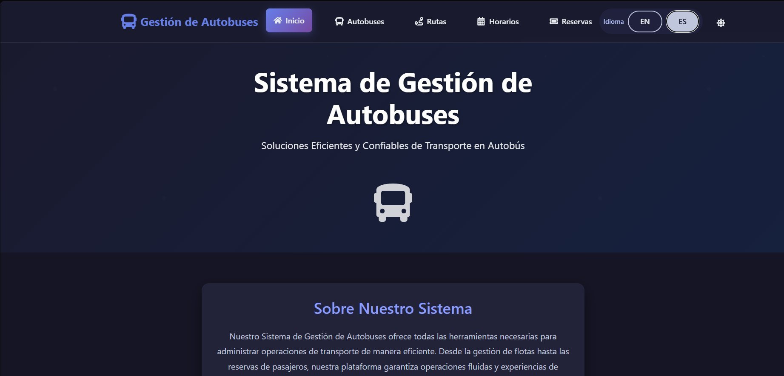
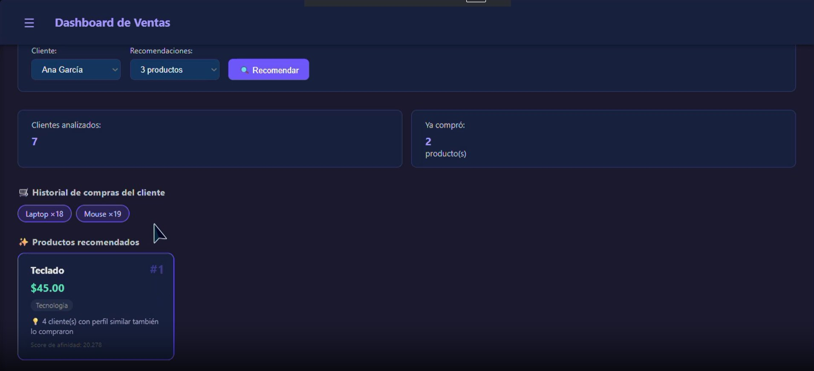

02
Empresarial
MTJ Transport
Recruitment
Plataforma de reclutamiento para especialistas CDL. React + TypeScript.
ReactTypeScript
Ver demo →
Disponible · Santo Domingo, RD
Full Stack Developer & Data Analyst
Modelo de regresión logística para predecir abandono de clientes en servicios financieros. Arquitectura desacoplada contenerizada y lista para cloud. Incluye dashboard ejecutivo con KPIs y probabilidad de churn por cliente.
Plataforma de reclutamiento para especialistas CDL. React + TypeScript.

Sistema full stack de transporte con interfaz bilingüe. CRUD completo para autobuses, rutas, horarios y reservas.

Dashboard de gestión de ventas con recomendaciones ML (filtrado colaborativo) y análisis de compras por cliente.

Plataforma EdTech con flujos diferenciados por rol. Django + Python.
Ingeniero en Sistemas Computacionales (UNPHU) con enfoque en desarrollo web full stack y análisis de datos. Construyo con .NET Core, Python y React, y diseño soluciones de datos en SQL Server y plataformas cloud certificadas en AWS y Azure.
Mi trayectoria en liderazgo de equipos y entornos corporativos de alto volumen me dio una perspectiva que pocos perfiles técnicos tienen: entiendo el negocio antes de escribir código.
Analicé datasets de e-commerce y CX para clientes BPO. Limpié y exploré +85,000 registros de satisfacción con Python (pandas, scikit-learn), construyendo reportes KPI y pipelines de datos.
Infraestructura de red multi-sucursal. Ciberseguridad, virtualización y MDM en entornos regulados.
Lideré equipo en entorno de alto volumen. KPIs CSAT/FCR, coaching y reportes de desempeño basados en datos.
Soporte especializado en telecomunicaciones. Metas CSAT y FCR cumplidas consistentemente.
Disponible para roles full-time, proyectos freelance o consultoría técnica. Hablemos.